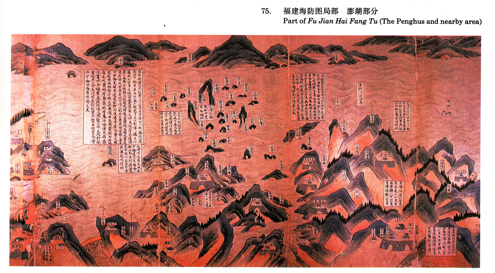

以下依圖上位置整理，由右至左、由上而下直書原文改為橫排並加標點。無法確認的字以「（？）」標示，模糊不可辨者以「□」代替。各段標題旁的座標可點擊，鏡頭會跳到該處。
按澎湖環山而列者三十六島，嶼巨浸中一形勝也。山週圍四百餘里，其中可容千艘。我守之以制倭，倭之以擾我，此必爭之地，前後建議籌之詳矣。近因官兵遠涉，藉口風時不順，躲泊別處，或謂議當建城，又應大費，遂寢其議也。然要在將令得人，則兵不患其偷安，城之有無可毋論矣。惟是延袤曠野，向未議守者而棄之歟？既設遊屯兵防禦，可惜山地廣闊，若能開墾，則田有糧（？），厚利有實。倘有賢能把守，募沿海漢民為兵，汛畫地分疆，置基照作，倡人開墾，三年之外計畝量收其三分之一。行有成效，則置兵糧、上田相資貿而食，共守險地，兩者俱得之矣。
此係澎湖遊右哨信地。把風當輪（？），內南風移泊風櫃仔；在南（？）北風守鄉□頭，南風移泊大菓葉防守。
此澳可泊南北風船百餘隻。北至福全一潮水，南至烈嶼、廈門一潮（？），至澎湖七更水，係浯嶼寨後哨信地。
浯銅遊屯駐（？）浯嶼信地。北距中左所，南距鎮海衛，各半潮水。漳郡之門戶，海澄之咽喉。寨多番舶，奇珍異物，賊之所覬（？）。要地北自擔嶼，南抵崎尾，而沿海居民屠島尾（？）、古浪嶼、中左所等處，俱盜賊淵藪，出沒靡常，其賊番之船每每在此開駕出港。設（？）使若嚴巡察、艦誌，則十得其九矣。
此灣可泊北風船二十艘，但不宜南風。北至舊浯嶼一潮半潮水，南至將軍澳一潮水，係銅山寨前哨信地。
此澳可容戰船十隻，軍船拋此。
至漳州府一百里，至井尾二十里，至井葉驛一百六十里，至漳浦縣一百里。
北至泉州府二百六十里，至同安縣一百三十里；南至漳浦縣一百二十里，至井葉驛五十里，至鎮海衛二百里，至陸鰲所一百里。
北至同安縣六十里，南至□□□四十里。（此框位於書頁裝訂邊，印刷即已模糊）
虛線框者為辨識存疑。點擊即可將鏡頭移到大致位置。
75. 福建海防圖局部 澎湖部分
Part of Fu Jian Hai Fang Tu (The Penghus and nearby area)
判讀說明：這是書頁翻印件，原件以朱砂底、墨書標示。長文經放大後可全文辨讀；零星小標籤受印刷網點與摺痕影響，少數字形只能依澎湖、廈門一帶既有地名推定，均加「（？）」。